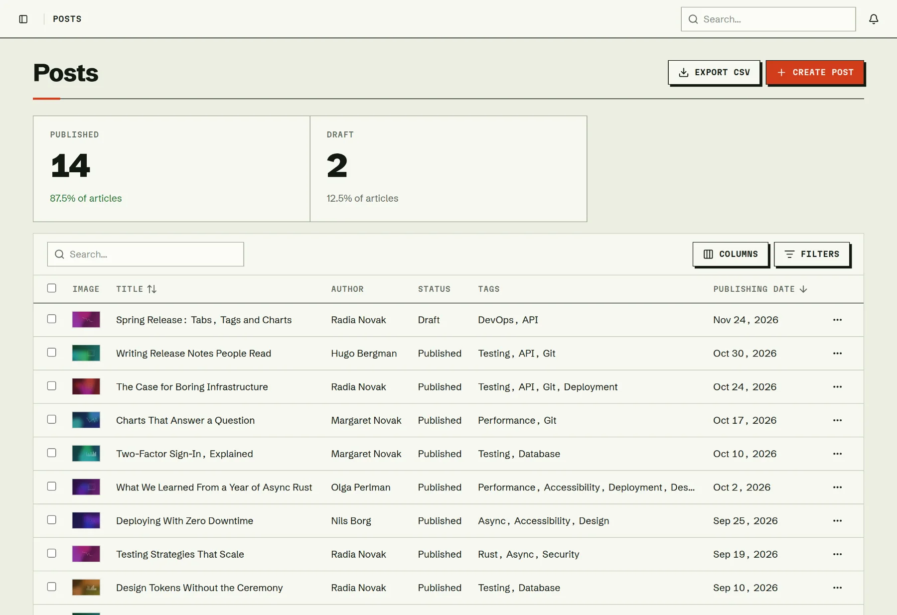
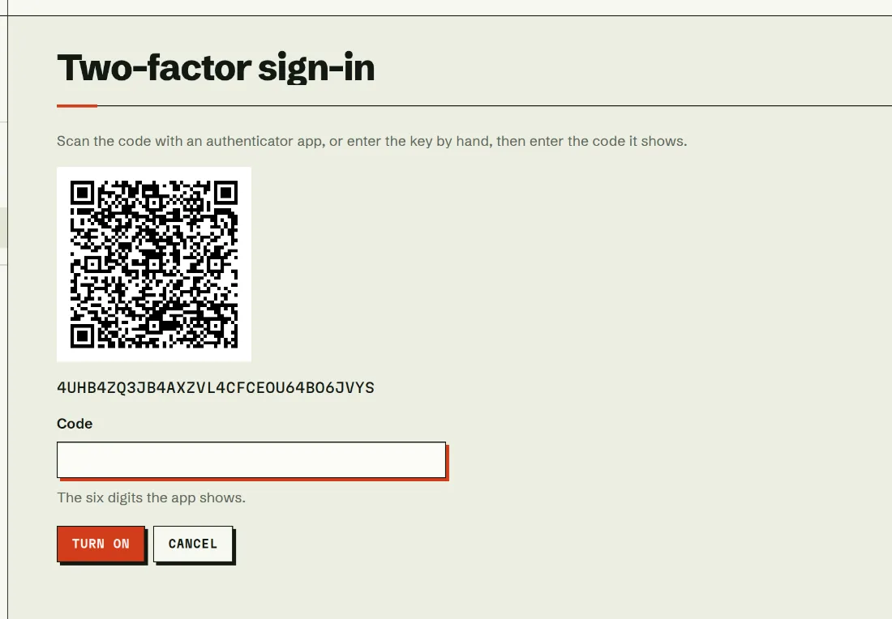
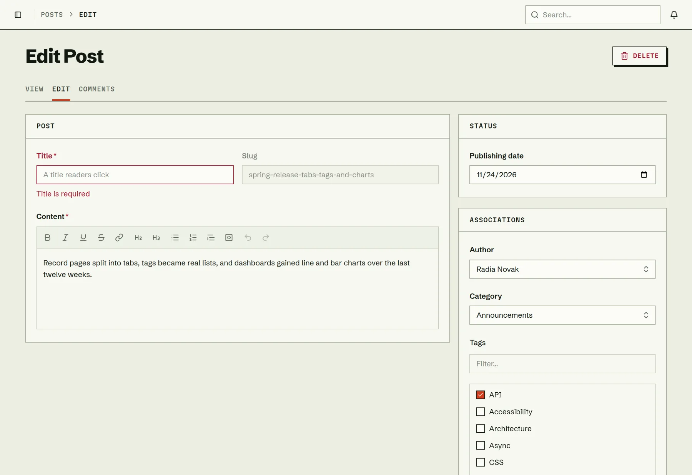
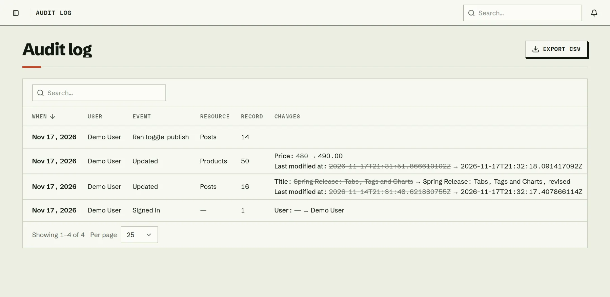
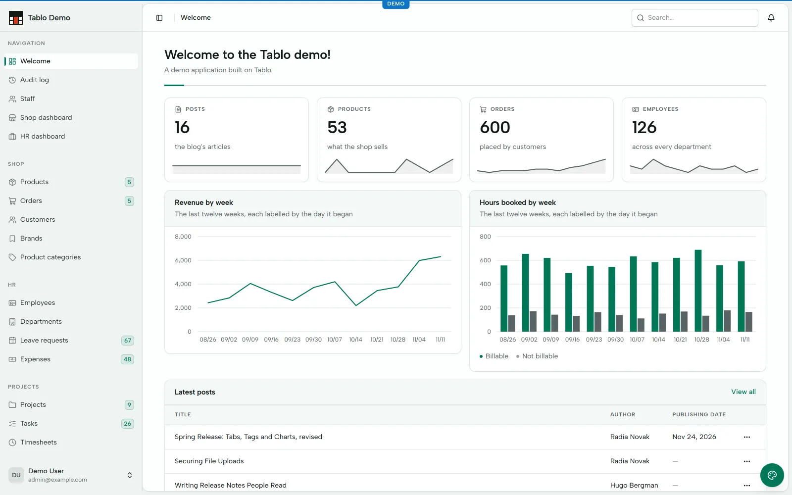

Admin toolkit for Rust
Declare the model.
Get the back office.
One resource declaration gives a model its list, forms, detail page and delete, behind sign-in, policies and an audit log. Tablo renders every page on the server with Topcoat and queries your Toasty models, with no JavaScript build.
cargo add tablo --features sqliteimpl Resource for PostResource { type Model = Post; type Form = PostForm; fn declare() -> ResourceDef<Self> { let col = Post::columns(); ResourceDef::new() .policy(access::policy(Domain::Blog)) .list_widget::<PostStatusWidget>() .table(Table::new(( col.image.image(), col.title.text() .searchable() .sortable(), RelationColumn::of::<AuthorResource>( relation!(Post.author)), col.published_at.date().sortable(), )) .filters((DateFilter::new( lens!(Post.published_at)).range(),))) .action::<TogglePostPublish>() }}

Point at a highlighted line, or a number, to see what it puts on the page.
The policy decides the buttons. This role may create posts, so the list offers Create Post. A role that may not sees no button, and the create route answers 403. A widget over the list's own query. The published and draft counts follow the search and filters the reader applies. A searchable column feeds the search box. The term reaches the database as a bound parameter, never as SQL text. Sorting is a link. The header points at?sort=title&dir=asc, so it works with JavaScript off.
Relations load with the rows. Each author arrives through an include, and only when the authors resource would show it to this reader.
Filters live in the URL. The date range is f.published_at.from and .to: a filtered list is a link you can send.
A record action in each row's menu. It runs in a transaction that reloads the post through the scoped query and checks the policy on that row.
A framework serves pages. A back office needs everything else.
Topcoat renders views and routes requests. Toasty reads and writes your models. Between them and a back office someone can trust sits everything below. Tablo is that part, declared beside the model.
| Concern | On a bare framework, you build | With Tablo, you write |
|---|---|---|
| Lists | Pagination, sort and search parameters, filter forms, empty states, CSV export, bulk delete with a confirmation | Table::new((col.title.text().searchable().sortable(), …)) |
| Forms | Markup, parsing, error messages, CSRF tokens, uploads, relation pickers, and a refusal of any field the form does not show | #[derive(tablo::RecordForm)]
struct PostForm { title: String, … } |
| Sign-in | Argon2id hashing, sessions stored as hashes, throttling, reset and verification mail, authenticator apps | Auth::password().two_factor(TwoFactor::new()) |
| Permissions | A check on every page, action, export and search result, and a mask for the fields a role may not read | .policy(when(is_editor))
.field_access(…) |
| Tenancy | A tenant filter on every query, a guard on every write, a team switcher | .tenancy(Tenancy::column(lens!(Post.team_id))) |
| Audit | A trail table, a hook in each write's transaction, a diff of the fields, a page to read it | panel.audit_log(|log| log) |
| Look | A design system, dark mode, a shell with navigation, global search, notifications | Brand::new("Acme").theme(Theme::Iris) |
| Languages | Every label, message and mail, in each language, with the reader's pick remembered | nothing: English and French ship, and .locales(…) picks |
| Tests | A client that signs in, carries the CSRF pair and reads rows back out of the HTML | client.submit("/admin/posts/-/create", body) |
Locked until you open it.
A panel requires sign-in unless you say otherwise. Every policy predicate denies until you allow it. A missing tenant, session or token refuses the request; nothing falls back to a laxer default.
- Passwords hashed with Argon2id, sign-ins throttled per login and address.
- Sign-up with email verification, and password reset by mail.
- Two-factor by authenticator app or emailed code, optional or required.
- Google or any OpenID Connect provider, bound to the browser that started it.
- Acting as a user when a rule allows it, named in the audit log.
- Your own sign-in in front, through
Auth::external.
Signed in to this panel?
no: to the sign-in pageEvery POST carries the token pair.
no: 403This ability, on this row.
no: 403Every query scoped to the request's team.
no tenant: 403A field a role may not read never renders.
masked
The form is a struct.
Derive it, lay it out in sections, grids and tabs, and pick a control per field: rich text, image uploads, searchable relation pickers, tags, repeaters, conditional fields, wizard steps.
Mounting checks every declaration against the model before the first request. A required column nothing writes stops the server with the fix:
panel '/admin' cannot mount: - `PostResource` form: nothing writes the non-nullable column `status` on create: the record form has no such field, toasty fills no `#[default(..)]` for it, and no `create_column` names it, so every create would fail at the driver; a resource that creates nothing declares `without_page(ResourcePage::Create)`
#[derive(tablo::RecordForm)]#[form(model = Post)]pub struct PostForm { pub title: String, pub content: String, #[form(relationship = AuthorResource)] pub author_id: Option<u64>, #[form(relationship = TagResource)] pub tags: Vec<u64>, #[form(file, optional)] pub image: String,}

Who changed what, field by field.
.audit_log(|log| log) keeps an entry for each record a write names, inside that write's transaction, with the fields it changed. Sign-ins and changes of credentials land beside them.
A write that never committed leaves no entry, and one that committed always has one. An administrator acting as a colleague is named next to the colleague. The log is a resource like any other: searchable, exportable, behind its own policy.

Pick a look. Keep your tokens.
Each theme sets colors, radii and the sidebar's frame. Redeclare any token in your stylesheet to make it yours.

Panel::new("admin").brand(Brand::new("Acme").theme(Theme::Jade))
Milliseconds, with the checks on.
Every figure is a full request to the demo's release build: session lookup, policy, query, the whole page rendered. Nothing is cached.
| Request | Median, then 99th percentile |
|---|---|
/admin/posts16 posts with authors and tags, a status widget, the shell | |
/admin/employees25 of 126 employees, their pay behind a field access rule | |
/admin/orders25 of 600 orders with their customers and status badges | |
/adminthe panel home: four counts with sparklines, two twelve-week charts, the latest posts |
400 sequential requests after 30 to warm up, one keep-alive connection, an Intel i7-8700 from 2017, in-memory SQLite, signed in as the administrator.
The 391 kB order list leaves as 25 kB of Brotli. One binary serves the pages, the assets and Topcoat's runtime: no Node, no bundler, no WASM.
Columns, fields and filters name a model field through a lens such as lens!(Post.title). Rename the field and the panel stops compiling.

A layer, not a cage.
Tablo sits on two upstream projects and hides neither. Your own pages use the same view! and #[component] as the panel, and your own queries the same Toasty models.
The Atlas maps how the parts fit: the core's layers, a request's path, where each check runs.
Models, resources, policies, and any page of your own beside the panel.
Panels, resources, tables, forms, actions, auth, tenancy, audit, themes.
RepositoryViews, routing, the request context, reactivity, assets, cookies.
The ORM: models, relations, queries on SQLite, PostgreSQL, MySQL, Turso.